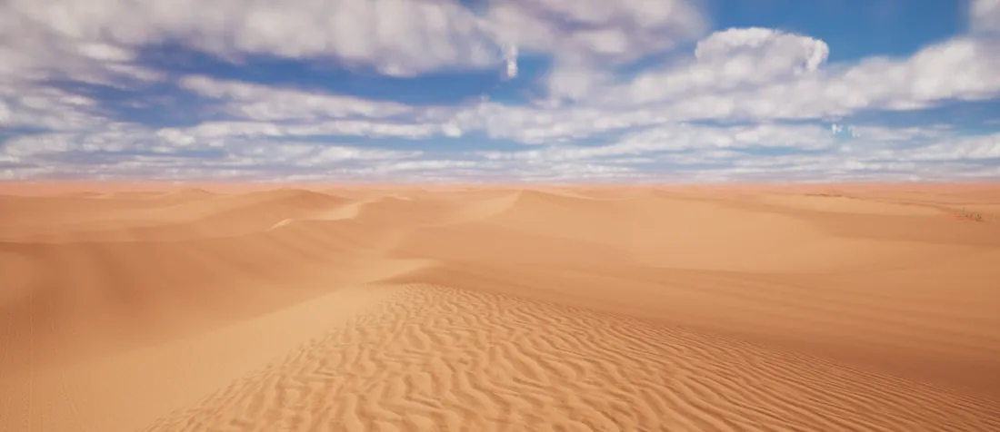
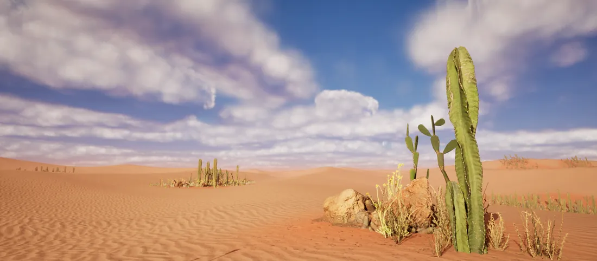
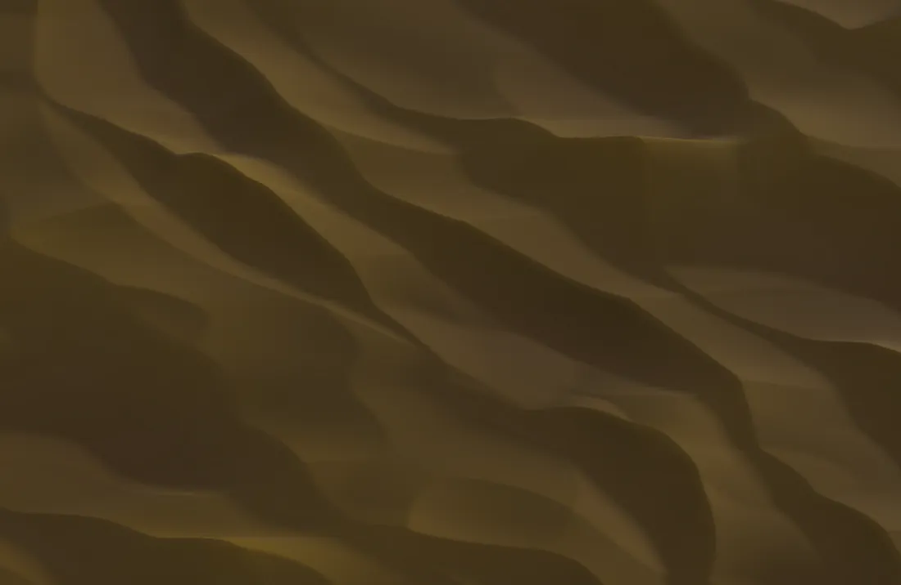
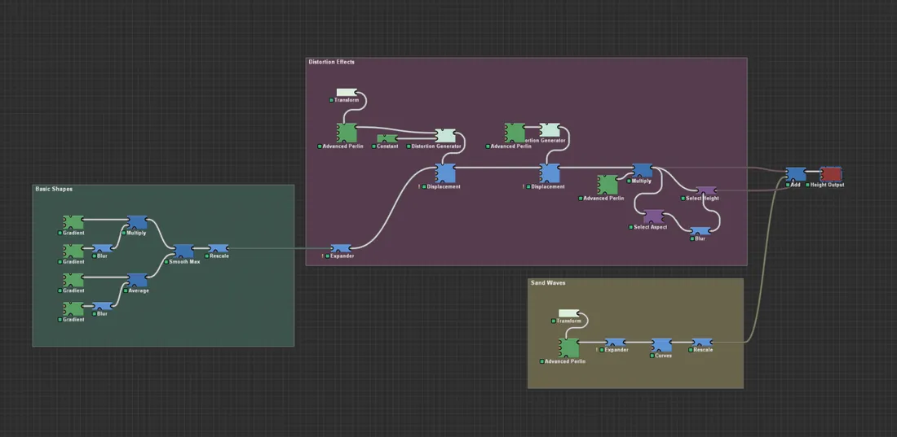
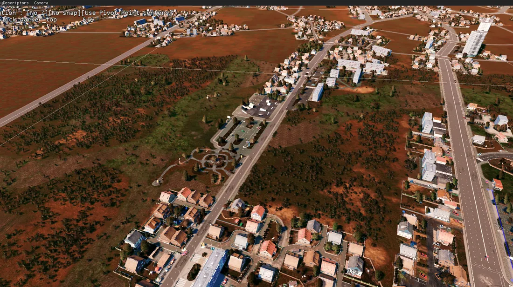

Personal work
Environment Art & Procedural Terrain
Procedural terrain generation in World Machine, carried into Unreal as a finished environment.
Personal work2023 – ongoingpersonalenvironment

Role
Environment Artist
Tools
World Machine · Unreal Engine · Megascans
Period
2023 – ongoing
Focus
World building and environment art
Tools
World Machine · Unreal Engine · Megascans
World Machine in production
I learned World Machine at Eugen Systems and wanted to make it the backbone of a
personal project. My methodology was iteration: first the basic shape, blended and
extended into another, then each detail layer in turn — distortion, wind, waves —
until the result held up.
Every step of the creation is visible in the sequence below, from raw heightfield to final dressed environment.
Bringing it into engine
Once in Unreal I implemented the landscape and populated the location with desert
assets. The difficulty with deserts is finding the right amount of decoration
against the right amount of open space — too little and it reads as empty, too much
and it stops reading as a desert at all.
Methodology
BlockoutComposition projected against the references, in line with navigation and lore
ModulesEnvironment built from modular kits
Narrative propsProps added to tell the story of the space
IterateRepeat until the result is polished
Gallery
Evidence




